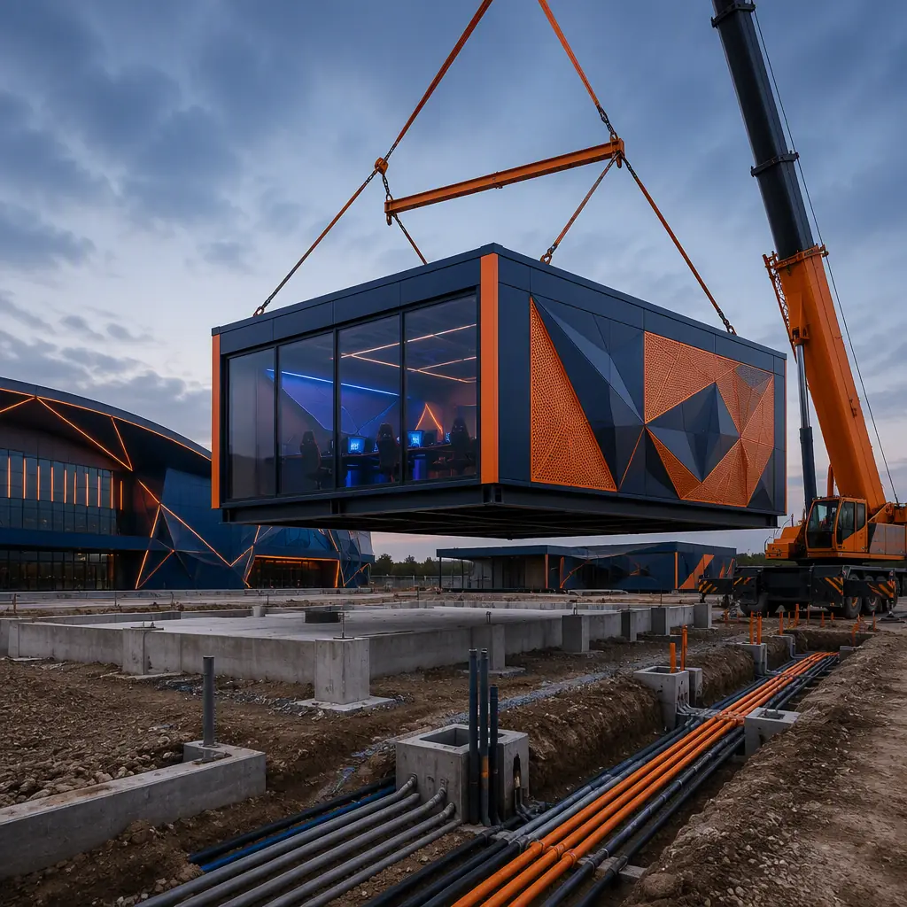
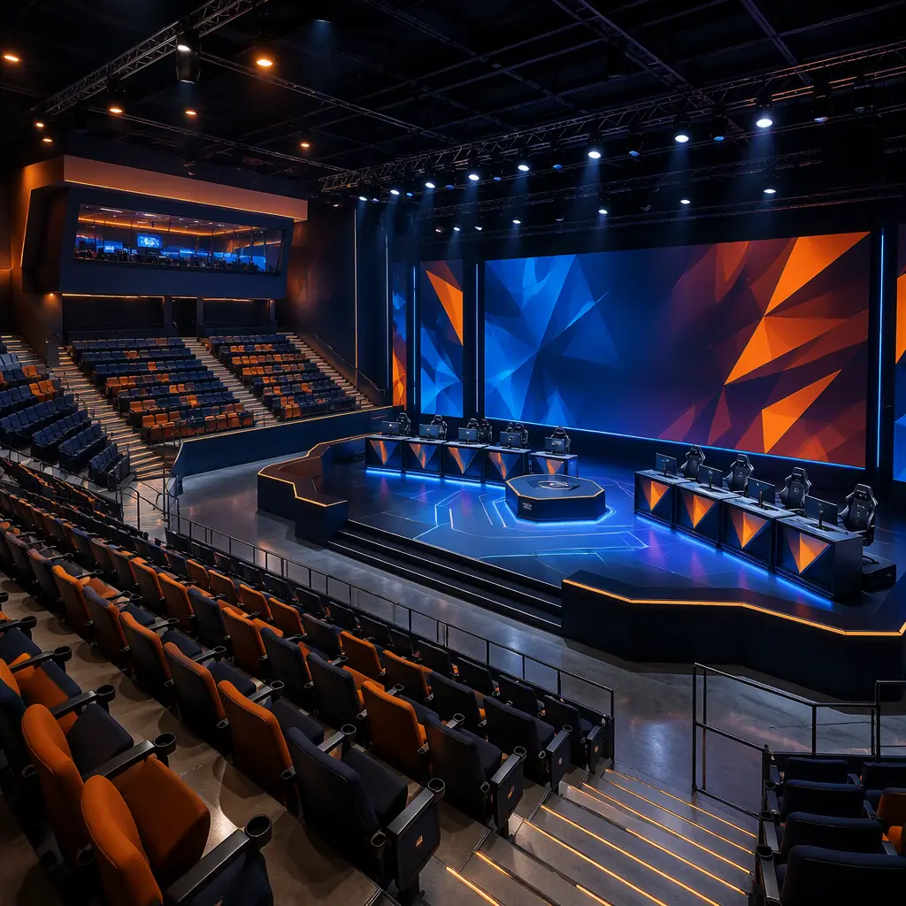
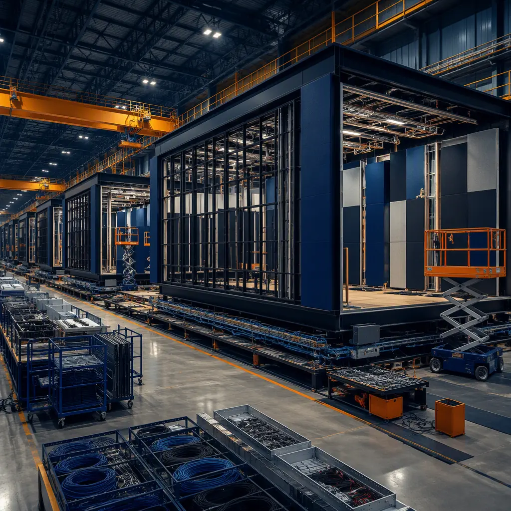

An esports arena is a television studio, a stadium, and a data center built into one building. The competitive gaming market now draws live audiences of 5,000–15,000 spectators to events such as the League of Legends World Championship and The International, while millions more watch the same matches through broadcast streams that originate from the venue itself. That dual role — packed live house plus 24/7 production facility — makes the esports arena one of the most infrastructure-dense building types in commercial construction. Yet most venues are still delivered as conventional arenas with 24–36 month schedules, because the spectator bowl, the broadcast compound, and the player and production spaces are coordinated by dozens of separate trades in a long sequential chain. Modular construction collapses that into a 12–18 week factory production cycle with a 4–6 week site set, because the arena bowl structure, broadcast rooms, and network backbone are engineered into factory-built modules where they can be tested before shipment. This guide explains the esports arena building program, how modular delivery satisfies broadcast, network, and spectator requirements, and what operators and developers should specify before they build.

Why Esports Venue Operators Are Going Modular
Three factors push esports venue delivery toward factory production. First, the building is defined by its systems, not its architecture: once the seating count, stage size, and broadcast standard are fixed, the power, cooling, and network packages are nearly identical from project to project, and repetition is what a factory does best. Second, the schedule is commercially critical — an arena's revenue depends on booking tournament circuits, and those circuits are committed 12–18 months in advance. A venue that misses its opening window loses its slot in the circuit, not just a month of construction. Third, the risk is concentrated in a few systems: broadcast power, network redundancy, acoustics, and spectator safety. All four are dramatically more reliable when factory-installed and pre-tested than when coordinated by site trades. The quality-gate discipline that makes factory testing reliable — documented inspections at every production stage — is the same system MODURA applies across building types, covered in our factory quality control guide.
Operators also value relocatability. Esports franchises and tournament organizers move between markets as fan bases grow, and a factory-built venue can be partially disassembled, transported, and re-deployed — converting what would be a stranded arena asset into a movable one. The same steel-frame structural logic that makes modules relocatable is detailed in our modular sports stadiums and arenas guide.
The Esports Arena Building Program: Bowl, Stage, and Production Zones
An esports arena is a compact, system-dense building. A typical mid-size venue of 60,000–120,000 sq ft breaks down as follows:
- Spectator bowl (35–45% of floor area). Seating for 3,000–10,000 across a sloped bowl, with sightlines engineered to a center stage rather than a playing field. Row spacing and seat width follow the same codes as traditional arenas.
- Stage and competition area (10,000–25,000 sq ft). The stage carries 10–50 player stations, a broadcast desk, and LED backdrop walls. Floor loading must support 150–300 lb per sq ft of equipment and staging.
- Broadcast and production compound (10–15% of floor area). Control rooms, camera galleries, commentary booths, and an equipment room with dedicated cooling — the infrastructure that turns a live event into a stream.
- Player and team facilities. Green rooms, practice rooms with 10–30 gaming stations each, locker-style team rooms, and warm-up areas isolated from the spectator bowl.
- Hospitality and operations. Concessions, premium seating, merchandise, security control, and back-of-house support.
Every element maps onto factory production. The bowl is delivered as precast or steel-framed raker modules, the stage as a pre-fitted platform module with power and data already terminated, and the broadcast rooms as finished, sound-isolated modules. The MEP engineering that carries these systems — power, cooling, network — is the same factory-integrated approach documented in our modular MEP systems integration guide.

Broadcast and Network Infrastructure: The Hidden Engineering
An esports arena fails or succeeds on infrastructure that spectators never see. The broadcast compound requires a power system sized for the full production load — typically 400–800 kVA for a mid-size venue, with UPS-backed circuits for broadcast equipment and a generator capable of carrying the critical load indefinitely. The network backbone is equally demanding: dual fiber feeds into the venue, a structured cabling system with 1,000+ drops to the stage, broadcast booths, and media positions, and 10 GbE connectivity to every production station. Cooling matters as much as power: a broadcast equipment room can reject 15–25 kW per rack, and the stage's LED wall and player PCs add another significant heat load that must be removed without flooding the bowl with noise.
Factory-built venues engineer this in rather than commissioning it in the field. The UPS, switchgear, fiber backbone, and cabling trays are installed in the modules and load-tested before shipment; the broadcast rooms are pre-fitted and pre-cabled so on-site cutover is a matter of connecting factory-tested assemblies. The same infrastructure-first design logic applies to any building whose value depends on continuous uptime, which is why the power and cooling approach overlaps with our modular data center construction guide.
Beyond the fixed infrastructure, the venue has to support the live production workflow that actually produces a broadcast. A typical esports production deploys 6–10 camera positions around the bowl and stage, an intercom and RF system that keeps a crew of 40–80 people coordinated, replay and graphics stations, and a contribution network that sends the finished feed to streaming platforms and broadcasters. All of it runs on the cabling backbone and conditioned power installed in the factory modules, which is why the production compound is specified as a system — drops, power, and cooling — rather than improvised room by room. The same production-ready infrastructure logic applies to content venues of every kind, detailed in our modular film and sound stage guide.
Acoustics and Spectator Experience in the Arena Bowl
The spectator experience is defined by sightlines, sound, and spectacle — and all three are factory-engineerable. Arena acoustics need a controlled reverberation time (1.2–1.8 seconds for a 5,000-seat bowl) so commentary and game audio stay intelligible, achieved with absorption panels on the upper walls and a tuned sound system with 90–110 dB peak output. The broadcast booths and control rooms require the opposite: sound isolation of STC 55–65 so commentary and production audio never bleed into each other or into the arena feed. Both acoustic packages — the absorptive bowl and the isolating rooms — are installed and measured in the factory, following the same principles MODURA documents in our modular acoustics and soundproofing guide.
The visual program is factory-built too. LED walls, stage trusses, and rigging points are integrated into the stage module with verified structural connections and power drops, so the venue arrives with its spectacle infrastructure pre-installed rather than assembled on a tight event schedule. For venues that also host music and entertainment events, the stage and rigging design logic overlaps with our modular film and sound stage construction guide.
Factory Production and the 12–18 Week Schedule
The arena is built indoors because broadcast, network, and acoustic quality are controlled indoors. The bowl rakers are fabricated and pre-fitted with seat rails, the broadcast modules are built with verified sound isolation and pre-terminated cabling, and the power system is load-tested before shipment. Every connection is documented in the submittal package — the same production-line discipline of weld verification, dimensional checks, and MEP testing at defined gates that MODURA documents in our factory quality control guide. Weather independence matters for arena projects too: a venue opening in a winter market does not lose its schedule to frozen site work, because the building work happens in a climate-controlled factory and the site work is limited to foundations, utilities, and a short set window.
On site, the set is measured in weeks, not seasons: foundations and utility runs are prepared in parallel with factory production, and the modules are set, joined, and interconnected over a 4–6 week window, followed by broadcast commissioning, acoustic verification, and event-readiness testing. The full schedule comparison of factory-built versus conventional delivery is in our modular construction timeline analysis.

Cost Benchmarks for Esports Arenas
Esports arena economics are driven by infrastructure: broadcast systems, network, cooling, and acoustic treatment together account for 30–50% of total project cost, which is why the infrastructure-first approach of modular delivery has such a large impact. For a typical 5,000-seat venue of roughly 80,000 sq ft, modular delivery lands at $350–550 per sq ft complete — or $28–44 million fully built — compared with $450–700 per sq ft for equivalent site-built construction. The 20–35% saving comes from factory labor efficiency, compressed schedule, and the elimination of specialty-contractor coordination risk on the broadcast and network systems.
| Benchmark | Site-Built Arena | Modular Arena |
|---|---|---|
| Design through first event | 24–36 months | 12–18 months |
| Building cost (5,000-seat arena) | $450–700 / sq ft | $350–550 / sq ft |
| Broadcast / network infrastructure | Field-assembled, commissioned on site | Factory-installed, pre-load-tested |
| Acoustic package | Field-installed, verified on site | Factory-installed, pre-measured |
| On-site set window | N/A (sequential trades) | 4–6 weeks |
| Relocatability | None | Partial — re-deployable to new markets |
For operators, the economics also favor staging: a venue can open with a 3,000-seat bowl and expand seat-by-seat as the fan base grows, and campus venues can be delivered in phases that follow enrollment and tournament demand. Operators should structure procurement around performance — committed opening date, verified broadcast and network testing, documented acoustic targets — using the framework in our modular RFP and procurement guide. Per-square-foot benchmarks across building types are in our modular construction cost guide, and total lifecycle economics are covered in our total cost planning guide.
An esports arena is a broadcast facility with a stadium attached. Factory production is the only delivery method where the bowl, the broadcast rooms, and the network backbone are built, tested, and documented as one integrated building — before it ever reaches the site.
Compliance, Zoning, and the Business Case
Esports venues carry a significant compliance load: assembly occupancy codes for the spectator bowl, fire-resistance requirements for the large open floor areas, accessibility standards for seating and stages, and local zoning for entertainment uses. Many municipalities also apply special-use permits to venues with late-night operating hours and amplified sound, and the approval sequence for factory-built structures is covered in our permitting and zoning guide. Fire-resistance requirements for the occupancy are covered in our modular fire safety guide.
On the business side, esports venues sit at the intersection of several durable growth curves: competitive gaming audiences, live-event demand, and the migration of traditional sports franchises into gaming. Universities are a fast-growing segment — campus arenas host collegiate esports programs and double as convocation and event space, following the same delivery logic as our modular university academic buildings guide. Whichever path applies, the key is to specify the infrastructure first — seating count, broadcast standard, network redundancy, acoustic targets — and let the factory build the venue around them.